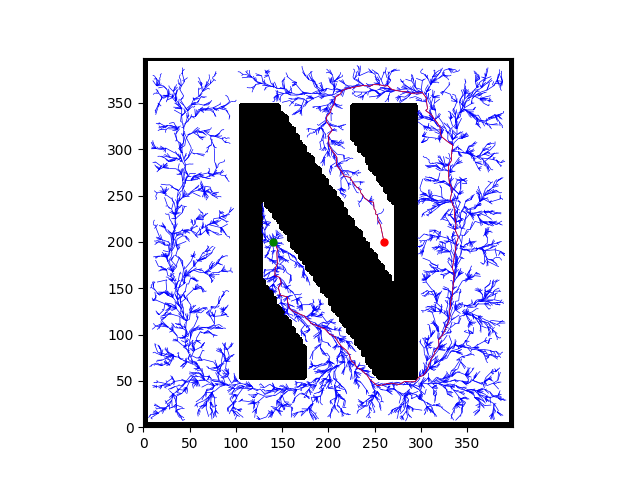
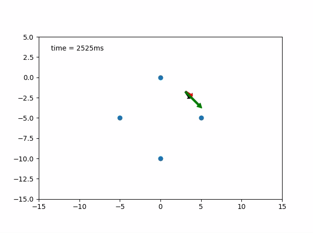
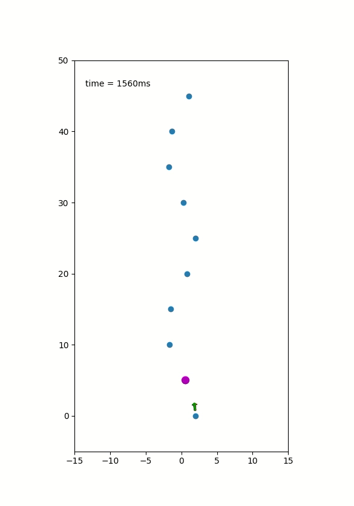

About
Kinodynamic Motion Planning was my projects in winter quarter. The goal of this project was to learn and explore motion planning, and implement a motion planning program. The program uses sampling-based method to generate a motion plan for a dynamic vehicle.
Overview
In this project, I aimed to reproduce result from a research paper, Anytime computation of time-optimal off-road vehicle maneuvers using the RRT* from MIT. Authors of the paper proposed a solution to generate a kinodynamic motion plan for off-road vehicle to drive through tight corners at high speed to achieve time-optimality. In the paper, authors employed a full dynamic model of a car which had taken the tire-road contact into account. With the full dynamic model, RRT-Star can find a plan that satisfy the vehicle dynamics. At extreme cases, motion plans for the vehicle is to slide from a state to another state.
Vehicle Dynamics Model
Vehicle dynamics model employed in this project is called bicycle model, and Pacejka’s Magic Formula was used for tire friction.
more
RRT-Star
RRT-Star is a departure from the RRT. RRT-Star has modified the extend procedure which allows it to replan the nodes close to the newly inserted one. This procedure will look for the nodes that will have lower cost to reach from root after rewiring this node to the newly inserted one. This procedure guarantee the sampling-based planner can find an solution and the solution is asymptotically optimal.


RRT-Star with 10K Node: 
Planning Space
The full dynamic model of the car has 8 DOF (, , , , , , , ). Keeping track of 8 dimensional state space is rather complicated. To deal with this problem, planner only plans in a 4D task space in , , (), assuming the there is an mapping of the free space in 8 dimension state space to 4 dimension task space.
Control
When solving for the control input needed for connecting current state and next state, a constant control was applied to the system. To solve for control, the vehicle dynamic equations were integrate to certain amount of time with know initial conditions.
more
 
Conclusion and Future Work
A motion planning problem is rather complicated even the planning scenario is simple. In this project, planner suffers from the performance issue when searching for a set of constant control to connect two states. A fast numerical algorithm must need to implemented to improvement the state connection calculation time.In the future, the vehicle geometry also need to be taken into account for more realistic collision detection.
more
Reference
- hwan Jeon, Jeong, Sertac Karaman, and Emilio Frazzoli. “Anytime computation of time-optimal off-road vehicle maneuvers using the RRT.” Decision and Control and European Control Conference (CDC-ECC), 2011 50th IEEE Conference on. IEEE, 2011.
- Webb, Dustin J., and Jur van den Berg. “Kinodynamic RRT*: Asymptotically optimal motion planning for robots with linear dynamics.” Robotics and Automation (ICRA), 2013 IEEE International Conference on. IEEE, 2013.
- LaValle, Steven M., and James J. Kuffner Jr. “Randomized kinodynamic planning.” The international journal of robotics research 20.5 (2001): 378-400.